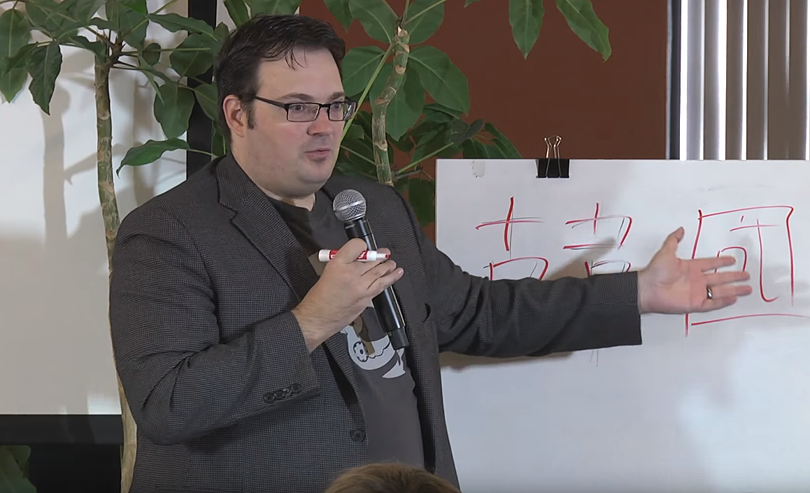

Brandon Sanderson
El autor de Fantasía más importante de la década
Biografía
- 1975: Nacido en Diciembre de 1975 en Lincoln, Nebraska.
- 1997: Viaja por primera vez a Corea donde descubrió su pasión por la escritura
- 2005: Publica su primer libro "Elantris"
- 2006: En Julio de 2006 se casa con Emily Bushman
- 2006: Publica la saga Mistborn, su primer trilogía altamenta aclamada
- 2007: Nace su primer hijo
- 2007: En Diciembre de 2007 completó la saga sin terminar de Robert Jordan "Las ruedas del tiempo"
- 2010: Publica su novela principal y más atesorada, "The way of the kings" el mejor libro de fantasía de la década.
"The purpose of a storyteller is not to tell you how to think, but to give you questions to think upon."

Libros:
- 2005: Elantris
- 2006: Mistborn
- 2007: The Well of Ascension
- 2008: The Hero of Ages
- 2009: Warbreaker
- 2010: The Way of the Kings
- 2011: The Alloy of Law
- 2012: The Emperors Soul
- 2015: Shadows of self
- 2016: Calamity
- 2017: The Bands Of Mourning
“Life before Death.
Strength before Weakness.
Journey before Destination.”
Una página de Tributo para mi autor favorito hecha por José Emiliano Pérez Garduño
Para la materia: "Tecnologías de la Web"